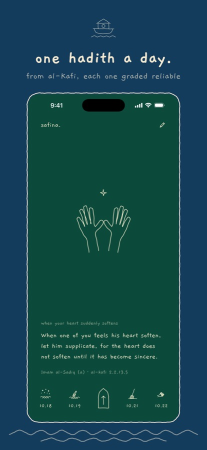
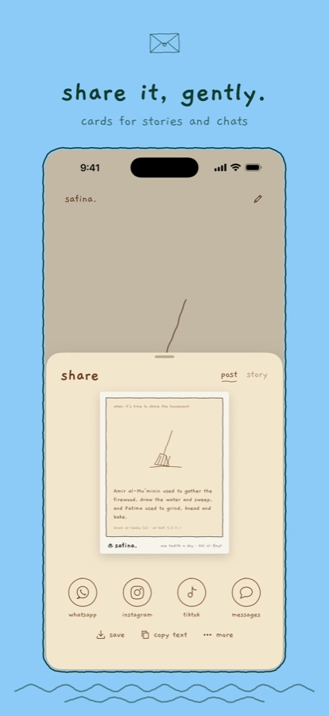
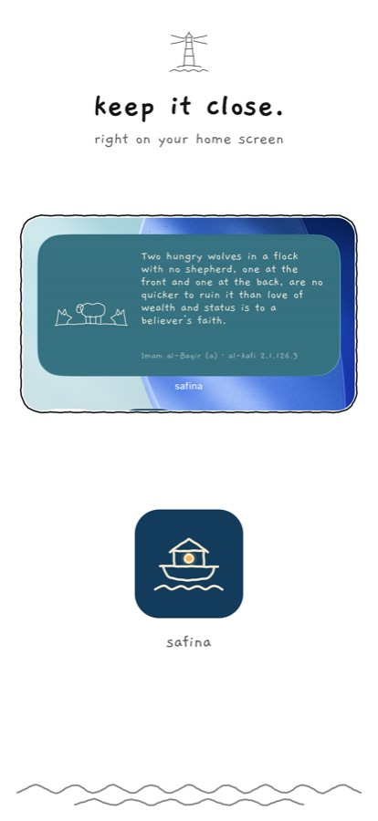
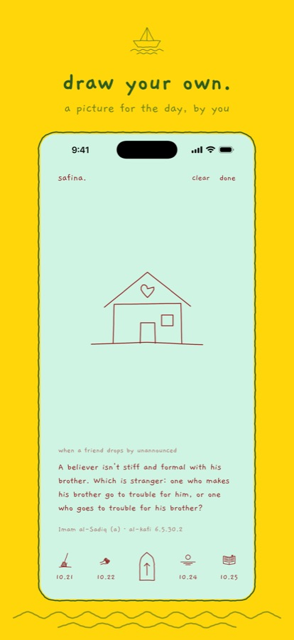

safina.
for Android · test version
thank you for trying safina. before it's in the Play Store. one hadith of the Ahl al-Bayt (a) a day, for the moments of real life, drawn by hand.
download for Android 56 MB · test 1open this page on your Android phone. Android 7 or newer.




installing it
- tap download for Android above.
- when it's done, tap open (or find safina.apk in your downloads).
- if your phone asks, allow your browser to install unknown apps, then go back.
- tap install. if Play Protect says it doesn't know the app, tap more details and then install anyway. that only means it isn't from the Play Store yet.
things to try
- open it each day for a new hadith, with its own colour and drawing
- tap the pencil to draw your own picture for the day
- share a card to WhatsApp, Instagram or anywhere, as a post or a story
- add the widget: hold your home screen, tap widgets, find safina.
- give the phone a gentle shake
good to know
- purchases (the supporter unlock and tips) are off in this test version; they'll come with the Play Store.
- the animated story video is on iPhone so far; on Android a story shares the still card.
- it won't update by itself. come back to this page for a newer version and install it over the old one; your drawings stay.
- nothing you do leaves your phone. privacy
tell me what you think
anything that looks wrong, feels slow, or a mistake in a hadith: sajjadpirani@gmail.com. a screenshot helps.
on an iPhone? ask for a TestFlight invite instead.